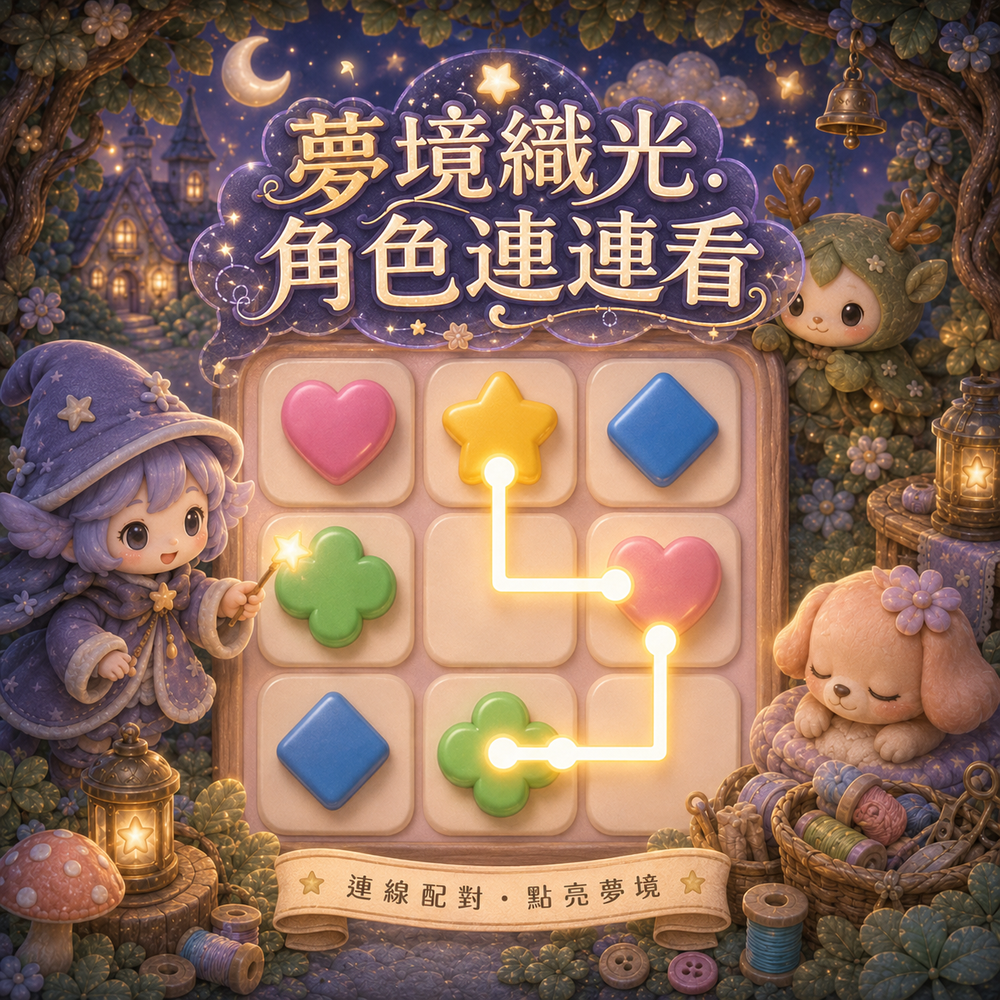
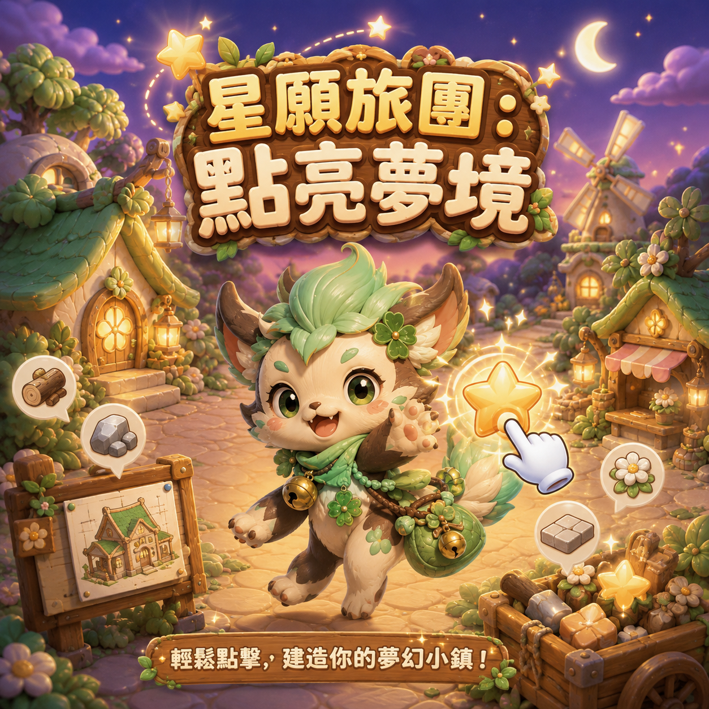
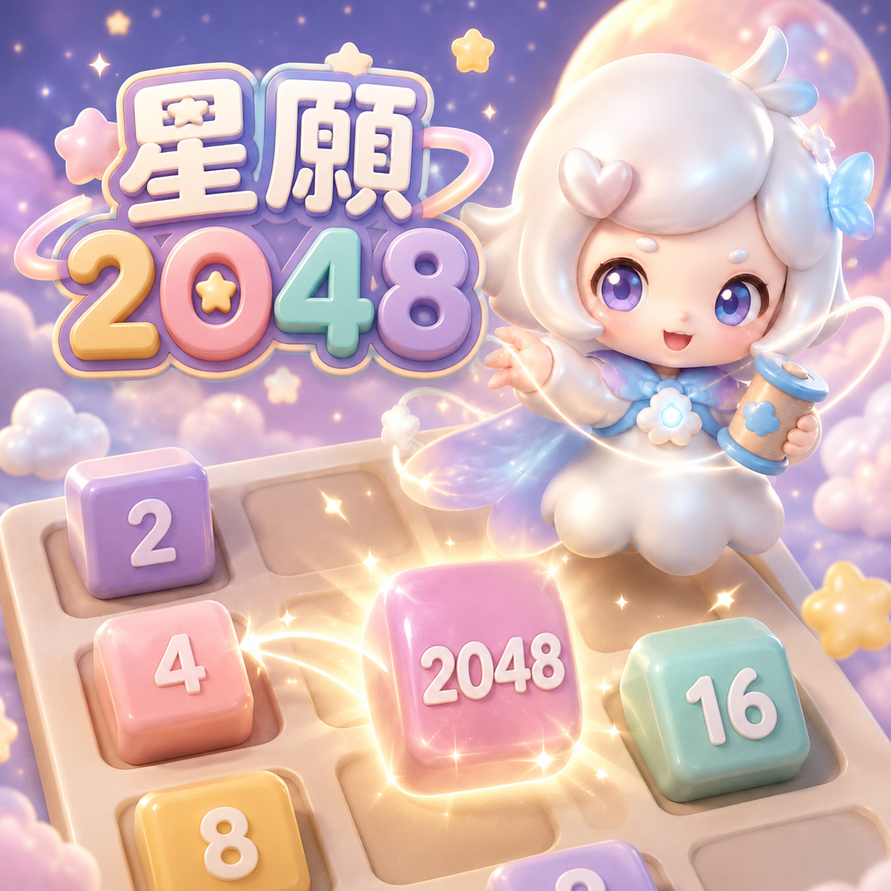
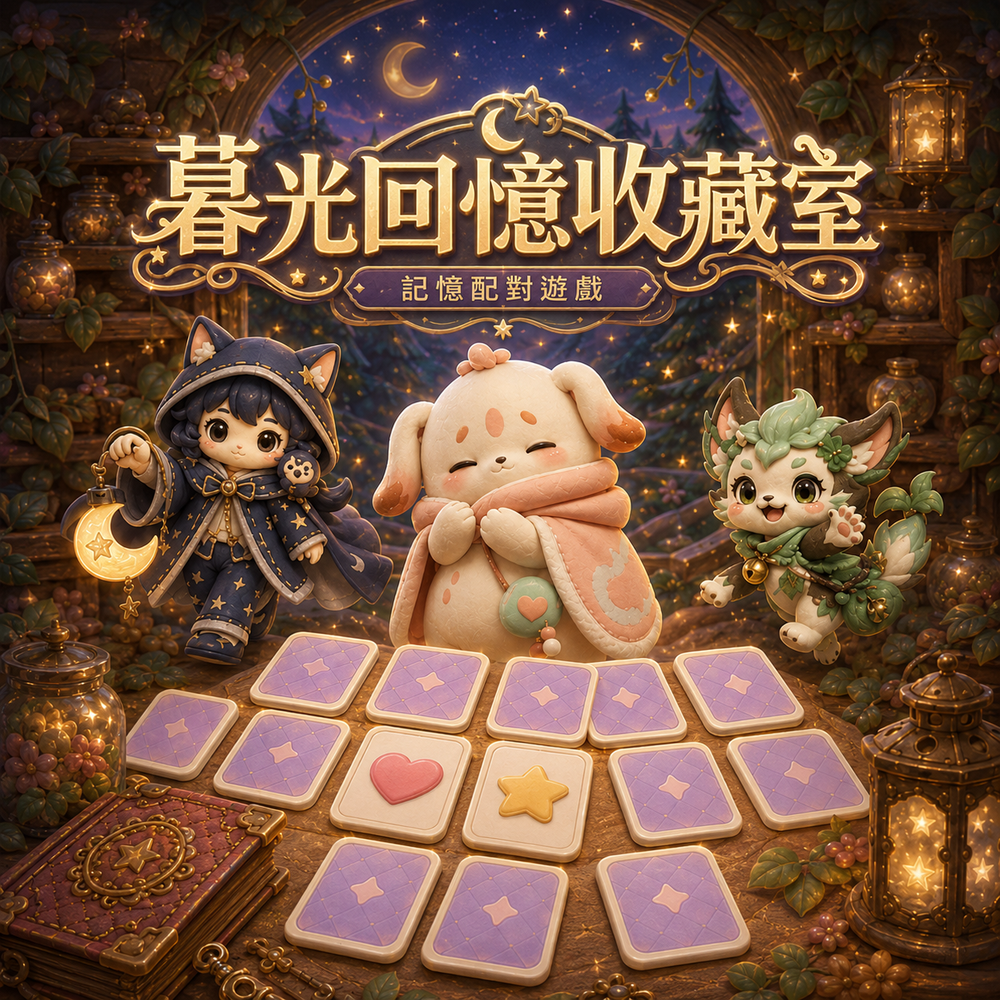
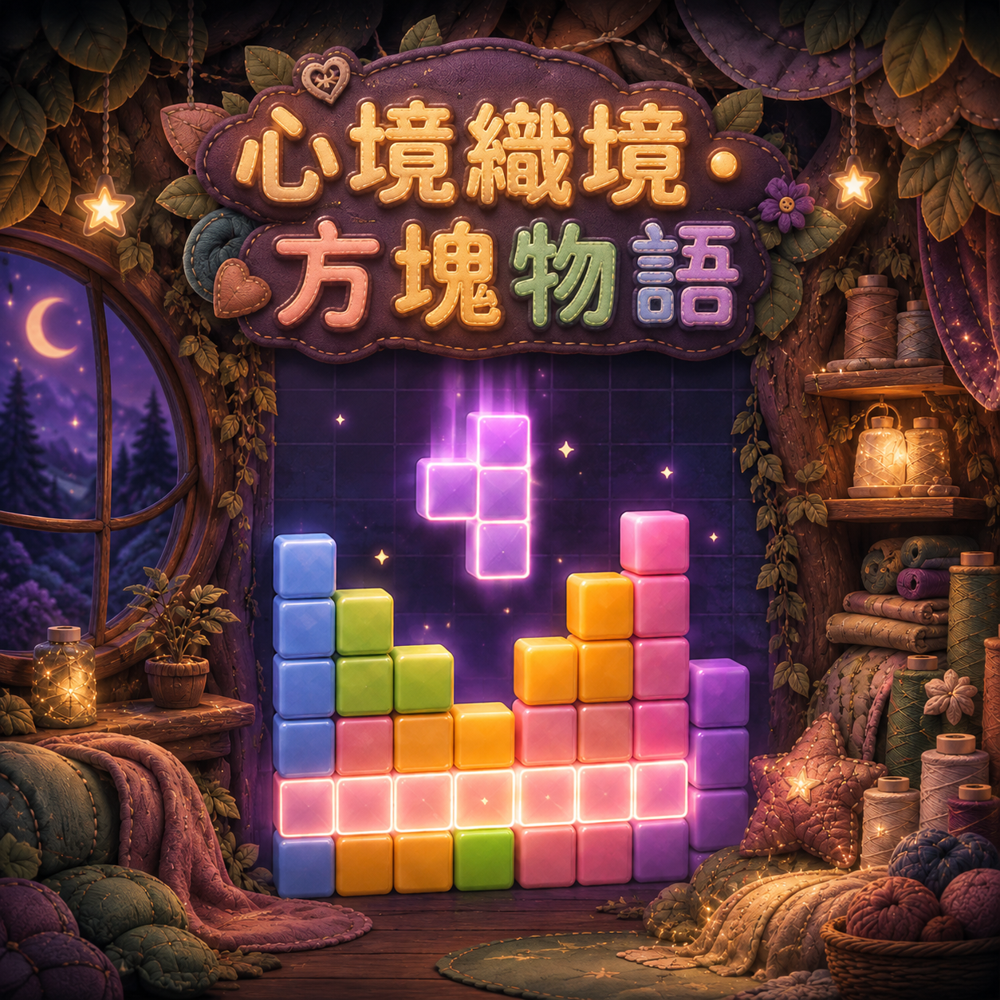

手機版修正測試
這版已移除所有後加的「返回 CxQ／返回小遊戲」按鈕。進入遊戲後，直接使用手機或瀏覽器的返回操作即可。
每日占卜手機首頁壓縮

夢境織光・角色連連看100dvh 遊戲區
心光旅團：記憶核心短螢幕 UI 壓縮

星願旅團：點亮夢境App 式內部捲動

星願 2048短螢幕緊湊模式

暮光回憶收藏室iPhone 棋盤置中 V2

心境織境・方塊物語控制區縮短
記憶翻牌這版會同時限制容器寬度與 iPhone 的 visualViewport 寬度，並使用零最小值 Grid 軌道，避免 Safari 把卡片撐出右側。